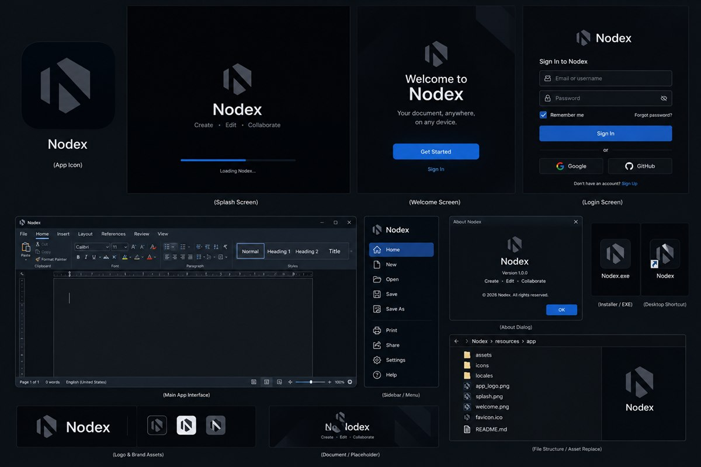

Featured · Web App
Nodex
Web-Based Word Processor
Aplikasi pengolah kata berbasis web — alternatif ringan untuk Microsoft Word. Membantu membuat, mengedit, dan mengelola dokumen digital lewat antarmuka yang interaktif dan responsif.
JavaScript
Node.js
HTML5
CSS3
API Integration
Vercel